Curiosidades
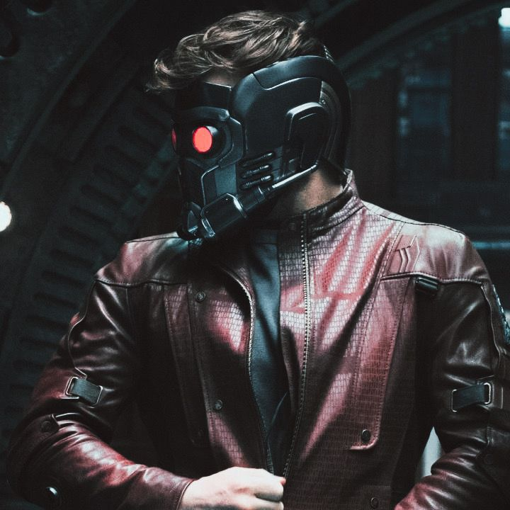
Peter Quill (Senhor das Estrelas)
Ele nasceu no Missouri, nos Estados Unidos, e foi levado da Terra em 1988, logo depois da morte da mãe. Metade humano e metade Celestial, ele herdou do pai, Ego, a capacidade de manipular a matéria, mas só descobre isso no Vol. 2. O apelido “Senhor das Estrelas” foi invenção dele mesmo, e quase ninguém o chama assim no primeiro filme.
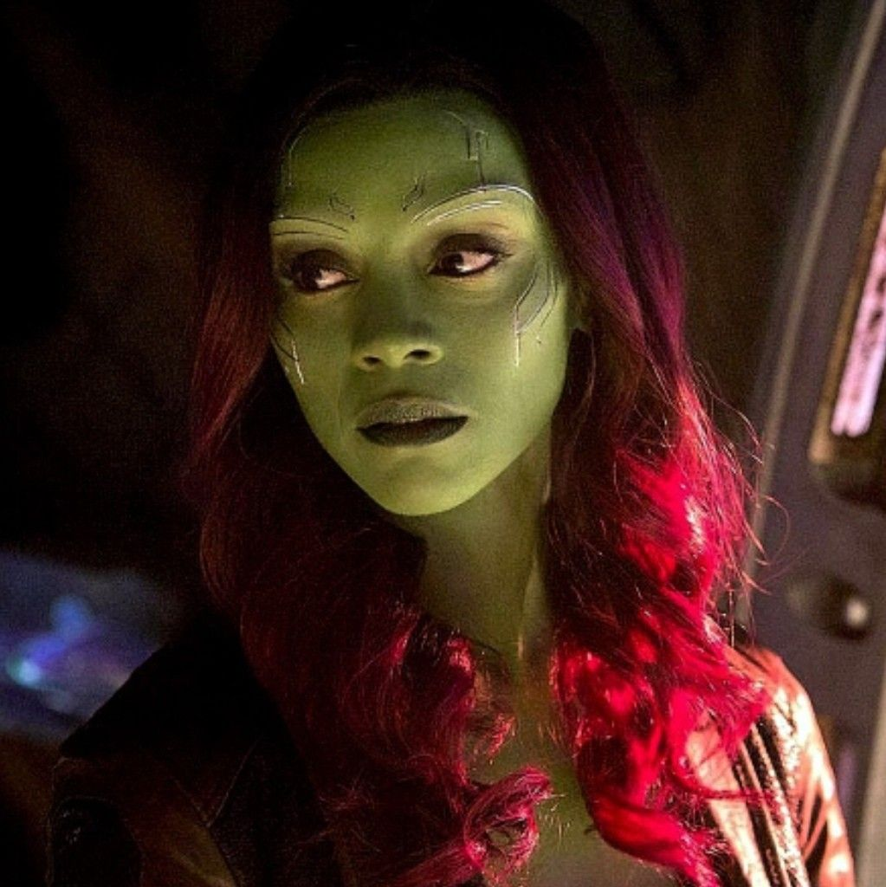
Gamora (A mulher mais perigosa da galáxia)
Ela foi adotada por Thanos ainda criança, depois que ele eliminou metade da população do planeta dela. Treinada como assassina, ficou conhecida como “a mulher mais perigosa da galáxia”. Foi ela quem aproximou os Guardiões, ao tentar impedir que a Gema do Poder caísse nas mãos de Ronan.
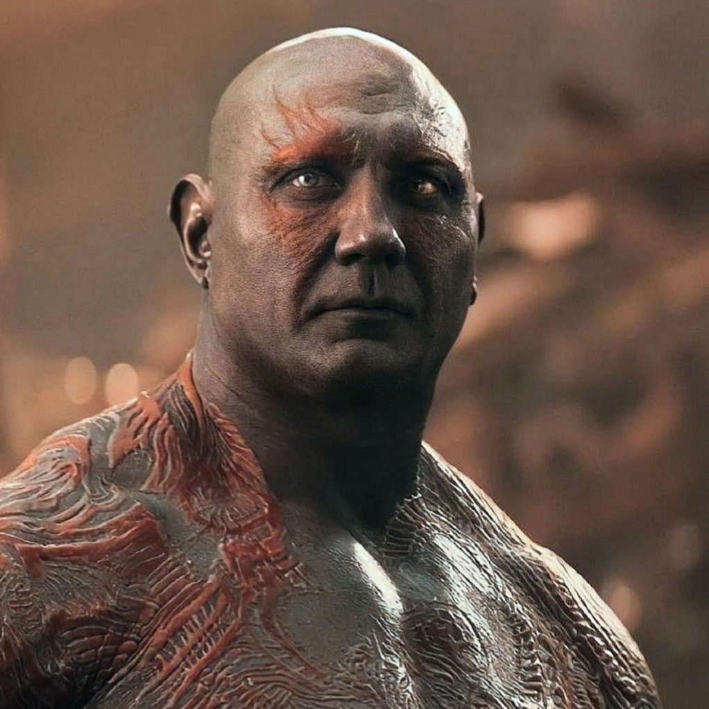
Drax (O Destruidor)
A família dele foi morta por Ronan, e é a vingança que o move no início do primeiro filme. Ele entende tudo ao pé da letra, então metáforas passam por cima da cabeça dele, o que rende várias piadas. Apesar do jeito bruto, no Vol. 2 ele cria um laço de carinho com a Mantis.
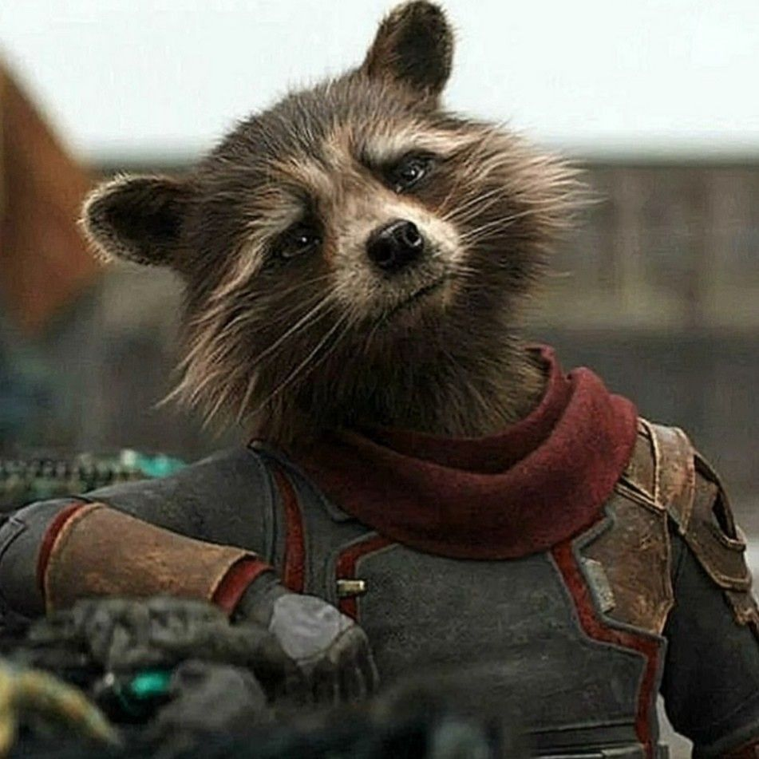
Rocket
Ele foi criado em laboratório pelo Alto Evolucionário, e no Vol. 3 descobrimos que seu nome de experimento era “89P13”. Ele odeia ser chamado de guaxinim, e a raiva vem de ter sido tratado como cobaia. É também um gênio da engenharia, capaz de montar armas e pilotar quase qualquer coisa.
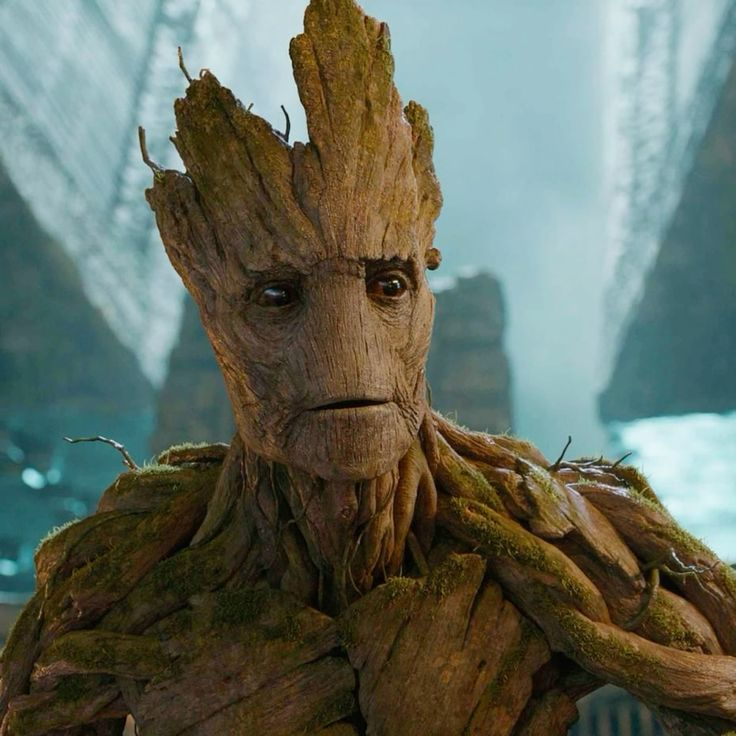
Groot
Ele pertence a uma espécie de seres vegetais, e como é uma planta, consegue se regenerar a partir de um simples galho. Foi assim que nasceu o Baby Groot, depois que ele se sacrificou para proteger os amigos no primeiro filme. Só o Rocket entende com precisão o que ele quer dizer com “Eu sou Groot”, e a frase muda de sentido conforme o tom.
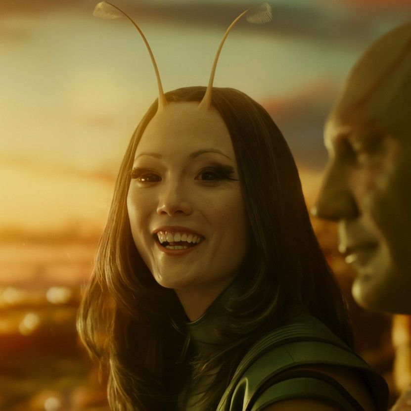
Mantis (A Empata)
Criada por Ego como assistente, ela é uma empata: sente as emoções dos outros pelo toque. Na história do especial de Natal, descobrimos que ela é filha de Ego, ou seja, meia-irmã do Peter. Ela usa o poder para acalmar e dar conforto, o que combina com o lado afetivo da equipe.
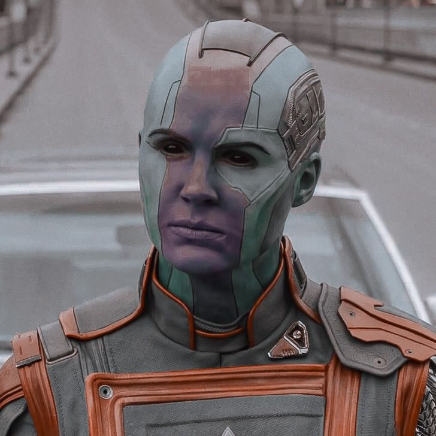
Nebula
Também filha adotiva de Thanos, ela cresceu em competição com Gamora. Cada derrota rendia uma punição, e Thanos substituía partes do corpo dela por peças cibernéticas. Ao longo dos filmes, sai de vilã para aliada e passa a fazer parte da família dos Guardiões.
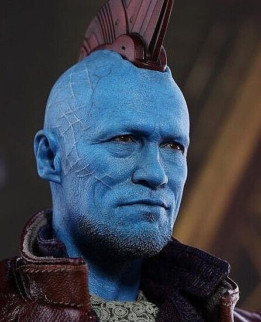
Yondu
Líder dos Ravagers, ele controla a flecha Yaka com assobios. Foi expulso dos Ravagers por tráfico de crianças a pedido de Ego, e ao ficar com o Peter, acabou criando o garoto. No fim, se sacrifica para salvá-lo, e os Ravagers fazem um funeral em sua homenagem.
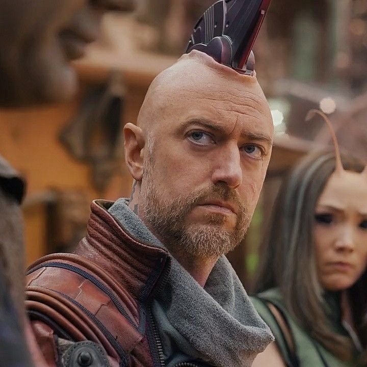
Kraglin
Ele era o imediato de Yondu e, depois da morte do líder, recebe a flecha Yaka de herança. No começo, tinha dificuldade para controlá-la, mas acaba dominando a arma. Mostra lealdade ao Yondu e também ao grupo dos Guardiões.
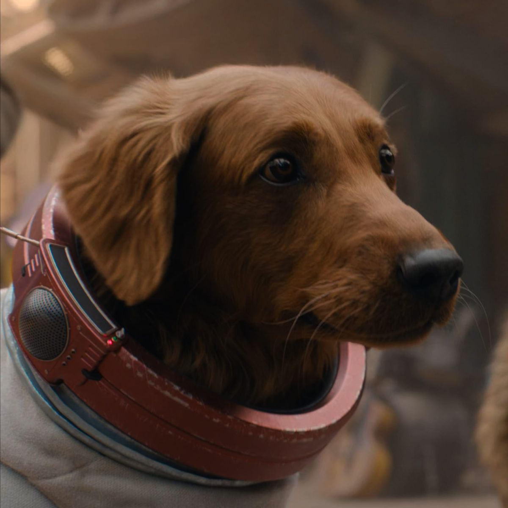
Cosmo
Ela é um cão telepata, inspirado nos cães soviéticos que realmente foram ao espaço, como a Laika. Vive na estação Knowhere e é o chefe de segurança do local. Ela se comunica por telepatia e tem um jeito sério e autoritário.
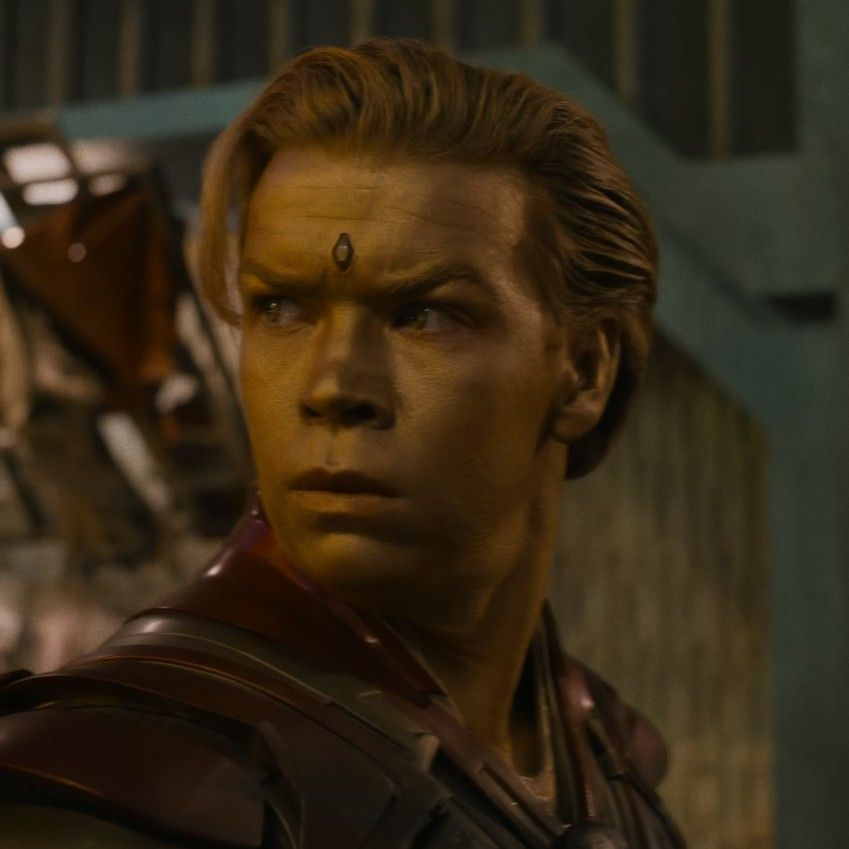
Adam Warlock
Ele foi criado pelos Soberanos, liderados por Ayesha, para enfrentar os Guardiões. Tem força e poderes enormes, mas é ingênuo e age como uma criança. Ao longo do Vol. 3, passa de inimigo a aliado.